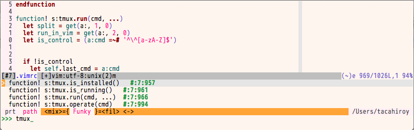

by Guy Routledge | @guyroutledge
Slides:
https://talks.guyroutledge.co.uk/switching-files/slides/
Working with a codebase, this is something you do a LOT.
Anything you do a lot, you want to do FAST.
Remembering every file name or path is a waste of time
Searching is the quickest way to find what you're looking for
But remembering what to search for is also a waste of time...
In computer science, approximate string matching (often colloquially referred to as fuzzy string searching) is the technique of finding strings that match a pattern approximately (rather than exactly)
Wikipedia: Approximate String Matching
A series of operations determines the closeness of a match
Insertion: co*t → coat
Deletion: coat → co*t
Substitution: coat → cost
Transposition: cost → cots
You can find files at the speed of thought
You don't even need to remember the full path or filename
Sometimes just a file extension could be enough...
Let's look at three plugins that use fuzzy search
Give a quick demo of how they work
Look at their pros and cons
A Mac app that hooks into your text editor
Supports MacVim, Xcode, Textmate, Coda, Emacs
GUI interface for searching and opening files
Fuzzy search
Opens files in new tab/current window
Displays SCM metadata
Launch peepopen: <leader>p
Next item: <Up>
Previous item: <Down>
Open file: <CR>
Close peepopen: <ESC>
Easy install
Nice GUI interface
Smart sorting
Shows SCM metadata
Limited options
Navigation with arrow keys
Costs cash money
A Vim plugin written in Ruby and C
Inspired by the "Goto File" feature of Textmate
Fuzzy search of folders
Fuzzy search of open buffers
Opens files in:
Launch CommandT: <leader>t
Launch CommandT: :CommandT
Launch buffer search: <leader>b
Launch buffer search: :CommandTBuffer
Next item: <C-j>
Previous item: <C-k>
Open file: <CR>
Open in split: <C-s>
Open in Vsplit: <C-v>
Open in Tab: <C-t>
Close CommandT: <ESC>
There are multiple mappings for movement and closing
If you use EasyMotion, you'll want to remap CommandT
There are lots of configurable options too
I have these lines in my .vimrc
nnoremap <silent> <C-e> :CommandT<CR>
nnoremap <silent> <C-b> :CommandTBuffer<CR>
let g:CommandTMaxHeight=25
let g:CommandTMatchWindowReverse=1
Fast
Customisable
Accurate results
Installation was fiddly
A pure vimscript fuzzy finder
Fuzzy search of files
Fuzzy search of open buffers
Fuzzy search of MRU files
Fuzzy search of tags
Opens multiple files
Regex mode
Run commands after opening
Opens files in:
Launch CtrlP: :CtrlP
Launch buffer search: :CtrlPBuffer
Launch MRU search: :CtrlPMRU
Cycle modes: <C-b> and <C-f>
Next item: <C-j>
Previous item: <C-k>
Open file: <CR>
Open in split: <C-x>
Open in Vsplit: <C-v>
Open in Tab: <C-t>
Mark multiple files: <C-z> and open with <C-o>
Create new file: <C-y> also creates parent directories
Close CtrlP: <ESC>
You can end the input with a colon to execute commands - such as open a file at a certain line number
let g:ctrlp_map = '<C-p>'
let g:ctrlp_cmd = 'CtrlP'
let g:ctrlp_working_path_mode = 'ra'
For more detailed information about setting the smart project root finder, check out the readme on github
A small handful of plugins have been written for CtrlP

Search for function definitions without needing ctags
Easy install
Pure vimscript
Multiple search modes
Regex support
Multiple file opening
Slower than CommandT
Hit and miss accuracy
Too many features?
A different take on fuzzy searching and file switching
More of a browser, less emphasis on speed
<Leader>lf Opens file explorer
<Leader>lr Opens file explorer at the dir of current file
<Leader>lb Opens buffer explorer
<Leader>lg Opens buffer grep
Easily browse your files, buffers and folders
Buffer grep is very cool
Slower file switching
Opens files in current window
http://www.guyroutledge.co.uk | @guyroutledge
Slides:
https://talks.guyroutledge.co.uk/switching-files/slides/